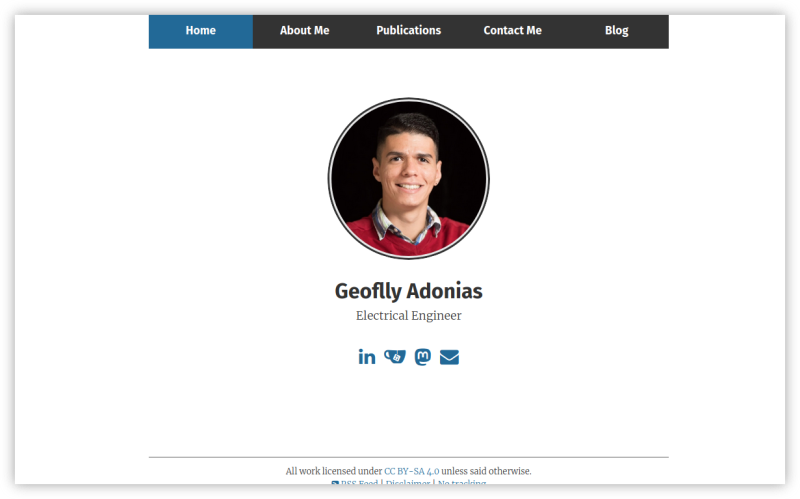
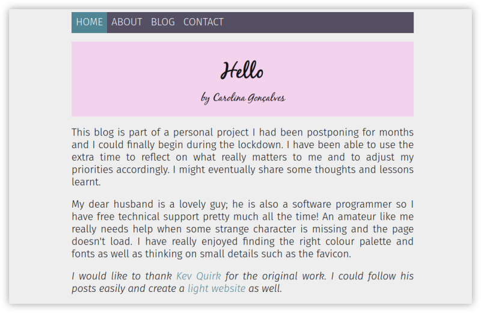
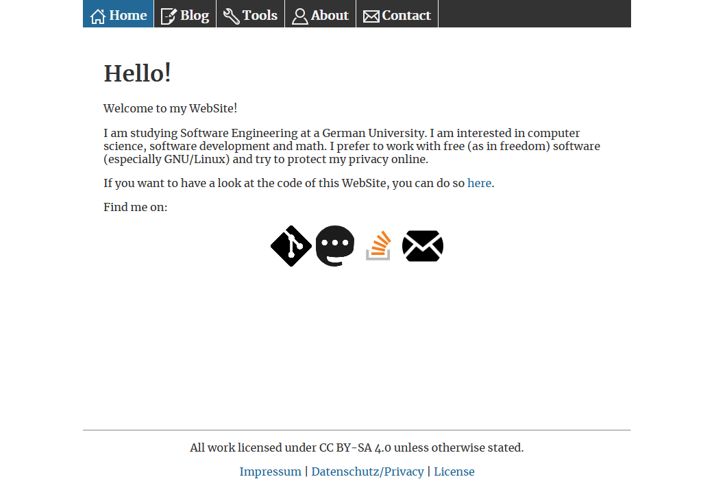

A couple of people have reached out to me to say that they have used MyLight.Website as a means to start their own website. This is amazing to hear! So I thought I would add this Showcase page so visitors to this site can see what interesting thing others have done with this code.
Geoflly Adonias (link)
Geoflly has really made the site his own. He has completely redesigned the homepage by adding an image of himself and implementing forkawesome support to the site, which is evident by the social icons. He has also added a footer, which wasn't within the code when he created his site, although this was later added by me in step 07.
Carolina Gonçalves (link)
Carolina has done some really cool stuff with her site. She has given het site some really muted pastel colours, that I think work really well. She has also changed up the font slightly, using Fira Sans throughout the site, not just on the headers.
The thing I like the most about Carolina's site, is the title at the top of each page. She has added a div and used CSS to turn the title into a custom banner at the top of every page. When I made this site, I just used images, but I really like what Carolina has done here, and I think I will be using this great idea in the future on this site.
Philipp Wilhelm (link)
Philipp has taken MyLight.Website and made some changes to make it his own. He's removed the Fira header font, and changes the size of the typography. As well as this, he's also added some cool icons to add an interesting dynamic to the site.
Have you created a site using MyLight.Website?
If you have used the code from this page to create your own website, I'd love to see it and I would be happy to add your site to this page too.
If you do want your website included on this Showcase, please get in touch with me.